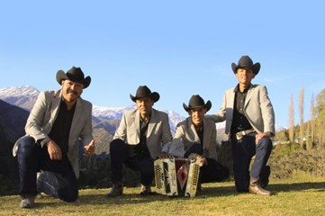
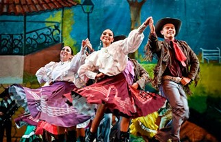

FOLKLORE
La música norteña es parte importante de la cultura musical de Nuevo León; el chotis, la redova, la polca, el corrido y el hasta el huapango huasteco, traído por los migrantes de San Luis Potosí, son ritmos que tienen una fuerte influencia de las formas dancísticas traídas a nuestro país por los inmigrantes alemanes, bohemios y checos que se asentaron en esta zona en el siglo XIX. Ritmos que pasaron a formar parte de nuestro folclor con el nombre genérico de música norteña. Los conjuntos musicales norteños originalmente formados por bajo sexto, violín, flauta, contrabajo y, ocasionalmente, acordeón diatónico con una sola hilera de botones, fueron modificándose gradualmente hasta dar paso, en la década de los cuarenta, a lo que actualmente es el conjunto norteño tradicional: acordeón diatónico de doble botonadura, bajo sexto, tololoche, tambora y, más raramente, un saxofón o violín.

Veamos el origen de cada uno de estos ritmos que han formado parte de nuestra cultura musical:
- Polca De origen bohemio, la polca es uno de los bailes característicos que acompaña la música de Nuevo León. Se baila en pareja con vigorosos pasos laterales en forma de “galope” y rápidas evoluciones en compás de dos por cuatro rematadas con un rítmico golpeteo de tacón. Entre las polcas representativas de la región se encuentran El aguacero, El rancho, La carreta, Evangelina, El barrilito, Viva Linares, Aurora, Monterrey, Cholita, La grulla, La tablita y La burra orejona.
- Redova De origen polaco, la redova es una especie de combinación de vals y mazurca que llegó a nuestro país entre 1830 y 1840. Al igual que con la polca, en la redova también se encuentra el zapateado rítmico. Sin embargo, aunque dinámicos, sus movimientos no son tan vigorosos y se desarrollan en compás de 3/4. Cabe recordar que también se conoce como redova a la alineación musical que interpreta redovas, la cual generalmente está formada por acordeón, bajo sexto, tololoche, tambora entre las redovas neolonesas más conocidas se encuentran Los Jacalitos, La Mazorca, El Naranjo, De China a Bravo, Diamantina y Los Caballos Panzones.
- Chotis De origen bohemio, el chotis (cuyo nombre se deriva del alemán Schottisch, que significa escocés) es un baile de pareja parecido a la polca y a la redova, pero de ritmo más lento, en compás de 4/4, y en el que los bailarines dan vueltas parecidas a las del vals vienés. Conoció su auge en nuestro país durante la segunda mitad del siglo XIX y principios del XX. Se bailaba tanto en los salones de la aristocracia como en los patios de la gente humilde, y hoy en día sigue siendo parte importante del repertorio musical de las bandas neoleonesas. Entre los chotis más conocidos se encuentran El revolcadero, El Cerro de la Silla, El pedacito, Florecita, Claudia y Monterrey de mis amores.
- El huapango huasteco A finales del siglo XIX, Monterrey inició un proceso de industrialización que provocó una fuerte expansión urbana y demográfica. Muchos de los migrantes que se asentaron en la ciudad eran originarios de San Luis Potosí, y con ellos llegó el huapango huasteco (interpretado con guitarra huapanguera, jarana huasteca y violín). El huapango pronto fue adaptado a la alineación instrumental regiomontana y se convirtió en lo que se conoce como huapango norteño. Otra modificación importante fue que los huapangos huastecos casi siempre son cantados, mientras que los huapangos norteños son, en su mayoría, instrumentales. Entre los más representativos se encuentran El gallito, El huarache, El salero, El borrego, El lucero, El mezquiton, El pávido navido y El relojito.
- El corrido Indispensable en el repertorio de la música de Nuevo León es el corrido. Una forma musical cantada, no bailable surgida como forma de comunicación e información en tiempos de la Revolución Mexicana. Ha logrado permanecer vigente gracias no solo a la adaptación de sus cualidades narrativas, sino a su pronta asimilación en la radio y el mercado discográfico. Actualmente son contadas las “hazañas” de narcotraficantes, gozando de una inusitada popularidad que ha consolidado al subgénero llamado narcocorrido como emblemático del corrido tradicional. Entre los corridos representativos de la música de Nuevo León podemos mencionar El corrido de Monterrey, El corrido de Agualeguas, Rosita Álvarez, El ojo de vidrio, Mi lindo Monterrey, La carga blanca y Viva Montemorelos.
